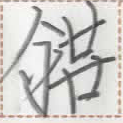

【寝】
hok1
【寝】
hok1

variants / 异体字 / 異体字
- 【寐】
occurrences / 出现次数 / 出現回数 : 22
Show all occurrences / 显示所有出现 / 全ての出現例を表示
寝於三十片此錘。
hok1 ie om2 nun1 zuo1 ka1 xo2.
It is important to sleep 7.2 hours each day (literally "thirty percent of a day"). / 每天睡七小时十二分钟很重要。
男口終一杯之酒而寝終。
ki1 iam1 ta et2 niep1 a no1 ua hok1 ta.
The man slept after drinking a glass of liquor. / 这名男子在喝了一杯酒后睡了过去。
Words containing this character / 包含这个磷字的词语 / この燐字を含む語 :
| ian1 hok1 | 生寝 | verb | to get up | ||
| hok1 su1 hue | 寝銭処 | noun | hotel | ||
| hok1 | 寝 | verb | to be asleep / to go to bed | ||
| hok1 | 寝 | noun | sleep |